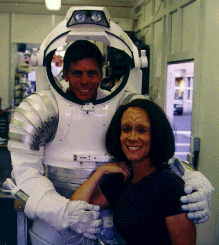

SARANAC LAKE STUNTWOMAN</center>
<center><a href="quick.html"><img src="quick.gif"border="0" /></a></center><br />
<center><a href="index.html"><img src="home.gif"border="0" /></a></center><br /><br />
<center><p></p></center><br />
<center><img src="leslie hoffman.jpg" border="0"></center><br />
<center>LESLIE HOFFMAN</center><br />
<hr /><br /><font size="6" strong>
Most people avoid crashing, burning, falling from high buildings etc. Leslie Hoffman thrives on these and other catastrophic events. These acts are literally her bread and butter.<p>
Leslie grew up in the beautiful Adirondack hamlet of Saranac Lake (population 5000) in Upstate New York. The Town is famous for being the original site of the Will Roger's Memorial Hospital. As a child, she used to play at the William Morris Playground. Little wonder, she knew that someday she too would be an entertainer.<p>
Leslie took gymnastic and ballet classes and was performing on stage by the age of four. Her Teacher was Mrs. Dorothy Sargent (Gladd). She also went to Fokine Ballet Camp and Sokol Gymnastic Camp. Later, she attended acting classes at the American Academy of Dramatic Arts and the Herbert Berghof Studios in New York City. This is when she discovered acting to be too slow for her, action was what she desired and that meant becoming a stuntwoman.<p>
In the mid 70s, she discovered Paul Stader's gym in Santa Monica, California. There, Leslie practiced high falls, fights, fencing, etc. Less than two years later, she was able to join SAG on her first union job Two-Minute Warning (1976) and has supported herself ever since. She was the first "voted in" member of the "Society of Professional Stuntwomen". During this time, she worked on such shows as "The Love Boat" (1977), "Fantasy Island" (1977), 1941 (1979) and "M*A*S*H" (1972).<p>
The 80s, Leslie was the first stuntwoman elected to the Board of Directors of SAG, the AFTRA Local Board and AFTRA National Board. She was the National Chairwoman of the Stunt & Safety Committee and the Co-Chair of the Young Performers Committee. She was sent to Sacramento to testify in possible changes to the Child Labor Laws after the "Twilight Zone" incident. Leslie was the first stuntwoman to join Women In Film. She was Doris Roberts regular stunt double on "Remington Steele" (1982), as well as working on shows like "CHiPs" (1977), A Nightmare on Elm Street (1984) and Airplane! (1980). During the 90s, she continues to work as a stuntwoman and stunt coordinator. She has coordinated projects such as the ABC Afterschool Special, "Me and My Hormones". This was Melissa Gilbert's directorial debut and starred Robin Strasser and Marion Ross.<p>
In the 90s, she was a member of the Stuntwomen's Association. She worked regularly on "Star Trek: Deep Space Nine" (1993) and "Star Trek: Voyager" (1995). This also included being an assistant stunt coordinator for Dennis Madalone, the Stunt Coordinator of both "Star Trek" shows. She was also Roxann Dawson's "Torres" regular double on "Voyager".<p>
Leslie gives back to the Industry by giving seminars on safety to various unions, film organizations and film colleges. Along with Brianne Murphy ASC, she did a seminar in cinematography at the Native American Film Festival in Santa Fe, New Mexico. In the AFTRA-SAG Young Performers Handbook, she wrote the chapter on safety. She has been interviewed extensively on the radio and in published articles. In the 1996 book, "Burns, Falls and Crashes", written by David Jon Wiener, you will find Chapter 13 is dedicated to her work.<p>
Her stunts are widely recognized such as her doubling Queen Elizabeth II going down the banquet table in The Naked Gun: From the Files of Police Squad! (1988). Last year, she worked on Wes Craven's Scream 2 (1997). Recently, she finished working on Universal's feature Mystery Men (1999).<p>
Recently, Leslie was the Stunt Coordinator for several Star Trek: New Voyages/Phase 2 episodes. " World Enough and Time" with George Takei was honored with the Best Online TV Guide Award in the Sci-Fi webisode category. In this episode she coordinated the fight with Sulu and Captain Kirk.<p>
Starship Farragut brought her in to Stunt Coordinate for their first SAG Signatory episode. Besides appearing at Special Events for "Nightmare on Elm Street" and honoring Wendie Jo Sperber at screening of "I Wanna Hold Your Hand" and "1941", she has been guiding her nephew Ritchie Hoffman in his career as an Actor. Ritchie is Charles Hoffman's oldest son, the younger Brother of Leslie.<p>
In 2010, Leslie was invited to London to do a Convention where she signed pictures of herself from Star Trek and Nightmare on Elm Street. When she talks to people somehow she always lets them know she grew up in SARANAC LAKE!!!!!!<p>
</font>
<br /><br />
<center><a href="quick.html"><img src="quick.gif"border="0" /></a></center><br />
<center><a href="index.html"><img src="home.gif"border="0" /></a></center>
</body> </html>